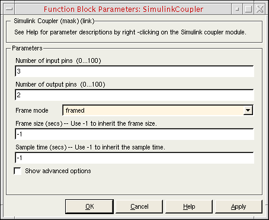
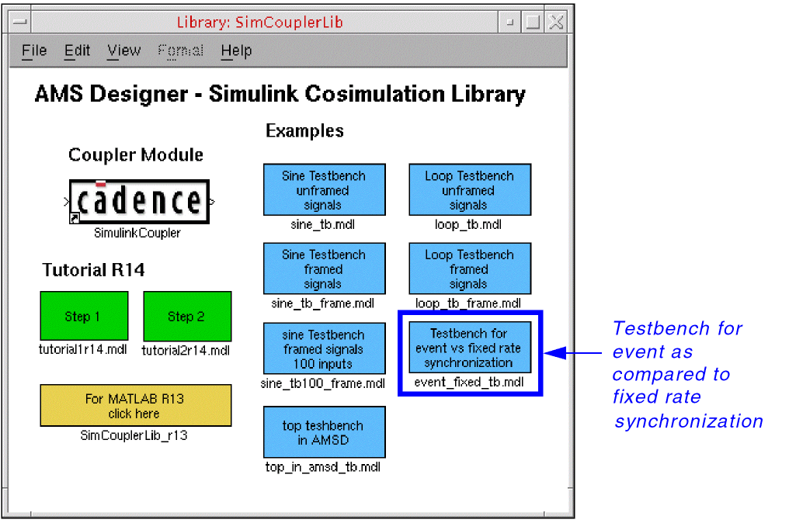

A
Learning More about the Cosimulation Interface
The following topics provide additional information about the AMS-MATLAB/Simulink cosimulation interface:
- Using Framed and Unframed Signals
- Running Event-Based and Fixed-Rate Simulation
- Using the Coupler Module in Feedback Loops
- Running AMS-MATLAB/Simulink Cosimulation on Other Platforms
Using Framed and Unframed Signals
Simulink provides different testbenches for framed and unframed data.
To open the tb_sine configuration, do the following in the CIW:
-
Choose File – Open.
The File Open form appears. -
In the File group box, select the following:
Field Selection -
Click OK.
The Open Configuration form appears. -
In the Open for editing group box, selet yes for both Configuration and Top Cell View.

-
Click OK.
The configuration appears in the Viruoso® Hierarchy Editor. The schematic appears in the schematic editor.
- The model files, if required, are set correctly.
- Connect Modules/Rules are available with their definitions.
- MATLAB/Simulink startup settings are defined correctly.
To start the AMS Designer simulation, do the following in the Hierarchy Editor:
-
Choose Plugins – AMS.
AMS appears on the menu banner. You must initialize a run directory before you can access any of the AMS menu selections. - Choose AMS – Initialize.
- Fill out the form and click OK.
- Choose AMS – Netlist and Run Options.
-
(Optional) On the Netlist and Run Options form, click Save/Plot to select signals to plot.
- Click Run.
Using the Sine Testbench with Unframed Coupling
To open the Sine Testbench (unframed signals) from the Simulink library, do the following:
-
In the MATLAB Command Window, type the following command to open the library:
open SimCouplerLib.mdl
- Double-click Sine Testbench (unframed signals).
-
In the testbench schematic window, double-click the SimulinkCoupler to view its parameters.
This SimulinkCoupler supports event-driven simulation and fixed-rate synchronization.
- The Frame mode is unframed and the Frame size field is inactive.
- The coupler module sends data to AMS Designer after each change of its input signal.
- In SimVision, you would see the sine wave as the sources generate it.
- The sampling time of all sine sources in Simulink is 1e-6, by default. You can change the sampling time on the Function Block Parameters form (by typing a value in the Sample time field) and view the changes in synchronization.
For fixed-rate synchronization:
-
Specify a Sample time of
10e-6to sample the signal at 100 kHz.
This value satisfies the sampling theorem since the highest sine frequency is 20 kHz. - Choose Simulation – Start to start the Simulink simulation.
-
Start the AMS Designer/
xmsimsimulation (click Run on the Netlist and Run form).
You do not need to make any changes on the AMS Designer side.
You will notice that this simulation runs faster. - You can view the sampled signals in SimVision and Simulink.
- You can run this simulation using reduced values for Sample time (down to 1e-6) for more accurate sampling.
Using the Sine Testbench with Framed Coupling
Some telecommunication simulations work with a data-stream-driven simulation. Some DSP algorithms process a data frame instead of single samples. Simulink provides framed signals for this purpose. To increase the simulation performance, cosimulation also supports framed signals. To investigate framed signals, do the following:
-
In the Library: SimCouplerLib window, double-click Sine Testbench (framed signals).
-
In the testbench schematic window, double-click the SimulinkCoupler to view its parameters.
 - If you simulated the unframed example before, rerun the simulator and view the signals in Simulink.
-
In the Frame size field, type
10. -
Rerun the AMS Designer simulator.
The result is the same. The simulation takes a bit more time.
You can explore several different frame sizes. The maximum valid frame length is 10000.
Running Event-Based and Fixed-Rate Simulation
Fixed-rate synchronization can be useful if the model contains signals with different sampling rates (high and low) and the interface connects only to a low sampling rate block. If the signals exchanged between AMS Designer and Simulink are at the lower rates, fixed-rate synchronization with a dedicated sample time can improve the simulation performance significantly. Here is an example:
-
In the Library: SimCouplerLib window, double-click Testbench for event as compared to fixed rate synchronization.
- The sine wave generator (Sine Wave) produces a 2 KHz sine wave sampled at 10 us. Simulink transmits the sine wave signal to the AMS Designer simulator.
- The pulse generator (Pulse Generator) produces a high-frequency pulse with a period of 100 ns (which is 100 times faster than the sampling rate of the sine wave).
-
In the Virtuoso® command interpreter window (CIW), choose File – Open.
The File Open form appears. -
In the File group box, select the following:
Field Selection - On the Open Configuration form, select yes for Top Cell View to open the schematic.
-
Click OK.
The Adder component adds the two signals from Simulink. - To start the simulation in event-based mode, do the following:
- In SimVision, display Signal_1, Signal_2, and Sum.
-
Start the AMS Designer simulation.
The simulation takes about 30 seconds. The sine waves appear in Simulink and in SimVision. You can mark the computed data points. - After finishing the run, go back to Simulink and change the sync mode in the coupler module to fixed rate with a sample time of 0.00001 (equal to the sampling rate of the sine source).
- Run the Simulink simulation again.
- Go back to SimVision and restart the simulator.
-
Start the AMS Designer simulation.
The simulation finishes after about 5 seconds. The high-frequency pulse no longer influences data exchange between the simulators.
You can resimulate this example using different sample times.
In other examples where the sampling rate changes over time, the event-based synchronization might be the better choice. Decide carefully what synchronization scheme fits best with your design.
Using the Coupler Module in Feedback Loops
You can use coupling in feedback loops. In this example testbench (tb_sine_loop), Simulink generates two sine waves and transmits them to AMS Designer and AMS Designer feeds one of the signals back to Simulink. The second signal is unused.
Simulink compares the feed-through sine wave with the original signal. The coupler has additional input and output pins and there is another feedback loop inside AMS Designer. Simulink adds a constant of 0.1 to the coupler output and the signal connects to the third coupler input. After each cycle, Simulink increases the signal by 0.1. You can observe this behavior in the Simulink or in the AMS Designer window. At the beginning of simulation, the program initializes the signal to zero.
To open the Virtuoso® schematic, do the following:
-
In the command interpreter window (CIW), choose File – Open.
The File Open form appears. -
In the File group box, select the following:
Field Selection - On the Open Configuration form, select yes for Configuration and for Top Cell View.
- Click OK.
- In the Virtuoso® Hierarchy Editor, choose Plugins – AMS.
- Once you have initialized the run directory for AMS, choose AMS – Netlist and Run and click Run.
- In SimVision, display the Loop signal.
You can decide whether to use the Loop Testbench with unframed or framed signals in Simulink:
Using the Loop Testbench with Unframed Coupling
To use the loop testbench with unframed coupling, do the following:
-
In the Library: SimCouplerLib window, double-click Loop Testbench (unframed signals).
- On the testbench schematic, double-click SimulinkCoupler to review its parameters.
- Choose Simulation – Start.
- Start the AMS Designer simulation.
-
After each cycle, increase the signal by 0.1.
A ramp appears in the plot windows. The two sine waves match. - Switch the coupling block to fixed port rate and view the changes on the ramp and the two sine waves.
Using the Loop Testbench with Framed Coupling
To use the loop testbench with framed coupling, do the following:
-
In the Library: SimCouplerLib window, double-click Loop Testbench (framed signals).
- On the testbench schematic, double-click SimulinkCoupler to review its parameters.
- Choose Simulation – Start.
-
Start the AMS Designer simulation.
The signal increases once for each frame.
The signal values are equal within each frame.
The signal has steps, depending on the frame size.
The frame size in the feedback loop path equals the frame size of the sine waves (defined in the buffer blocks). - Change the frame size and view the changes in the results.
Warning: Block diagram 'loop_tb' contains 1 algebraic loop(s).
For more information about loops, use type the following command in the MATLAB Command Window:
sldebug loop_tb
The Simulink debugger command-line prompt appears:
(sldebug @0): >>
To eliminate the warning message, do the following:
-
In the Simulink testbench window, choose Simulation – Configuration Parameters.
The Configuration Parameters form appears. - In the Select tree, select Diagnostics.
-
In the Algebraic loop field, select none.
- Click OK.
Running AMS-MATLAB/Simulink Cosimulation on Other Platforms
You can run AMS-MATLAB/Simulink cosimulation on Linux, Solaris, HP, IBM, and Windows platforms. If you are running cosimulation from MATLAB under Windows, you must add the path to the coupler in the Cadence® IUS installation hierarchy in MATLAB using the addpath command. For example:
addpath('/grid/cadence/install/ius57/lnx86/tools/affirma_ams/etc/matlab');
addpath('/home/cadence/tutorial/AMS-MATLAB/matlab');
addpath('/home/cadence/tutorial/AMS-MATLAB/matlab/tutorial');
Return to top